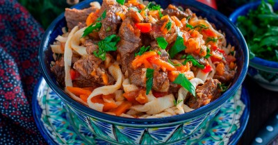

Лагман из говядины в домашних условиях

Ингредиенты
Для лапши:
- Пшеничная мука - 250 гр
- Яйца - 1 шт.
- Вода 100 мл
- Растительное масло - 1.5 стол. л.
- Имбирь – 20 г
- Соль – по вкусу
Для мяса:
- Соль по вкусу - 600 гр
- Болгарский перец - 1 шт.
- Морковь - 1 шт.
- Лук репчатый - 1 шт.
- Помидоры - 2 шт.
- Чеснок - 2 зубч.
- Сельдерей - по вкусу
- Перец - по вкусу
- Специи сухие - по вкусу
- Зелень - по вкусу
Рецепт приготовления
- Для начала подготовьте необходимые ингредиенты для лапши. В глубокую миску просейте муку, вбейте яйцо, добавьте соль и всё хорошо перемешайте. Добавьте тёплую воду и растительно масло и замесите эластичное тесто. Оставьте тесто на столе минут на 30, чтобы потом с ним было проще работать.
- Готовое тесто несколько раз обомните и на припылённой мукой поверхности раскатайте в тонкий пласт.
- Присыпьте пласт из теста с двух сторон мукой и сложите в неплотный рулет. Острым ножом порежьте тесто на тонкие полоски.
- Лапшу отварите в кипящей подсоленной воде в течение 3 - 4 минут. Готовую лапшу откиньте на дуршлаг и промойте водой.
- Подготовьте необходимые ингредиенты для мясной составляющей блюда.
- Говядину промойте и обсушите бумажным полотенце. При необходимости вырежьте прожилки и сухожилия. Нарежьте мясо на небольшие кусочки.
- Лук очистите и нарежьте полукольцами. Чтобы лук при нарезке не щипал глаза, промойте его и нож под прохладной водой. Стебли сельдерея разрежьте вдоль и нарежьте на небольшие кусочки. Чеснок очистите и тоже нарежьте на небольшие кусочки.
- Морковь помойте, очистите и нарежьте на брусочки. У болгарского перца срежьте плодоножку и нарежьте его небольшими кусочками. С помидоров снимите кожицу. Для этого сделайте на них в районе плодоножки два надреза крест-накрест. Обдайте помидоры кипятком. После этого кожица с лёгкостью снимется. Порежьте помидоры на небольшие кубики. Если они не очень сочные, можно добавить дополнительно томатную пасту или кетчуп.
- На сковороде с толстым дном разогрейте растительное масло и обжарьте на нем кусочки говядины со всех сторон.
- Добавьте к мясу морковь, лук, чеснок и сельдерей. Обжаривайте всё вместе 5 - 7 минут.
- Добавьте к мясу и овощам болгарский перец, помидоры, соль, перец, специи по вкусу. Всё перемешайте, накройте сковороду крышкой и тушите до готовности мяса. При необходимости можно подлить воду.
- В тарелку выложите готовую лапшу, сверху выложите мясо с овощами и полейте получившимся соусом. Украсьте лагман из говядины нарезанной свежей зеленью по вкусу. Приятного аппетита!
Вернуться к списку блюд